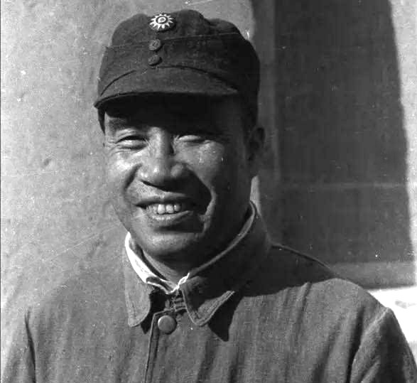
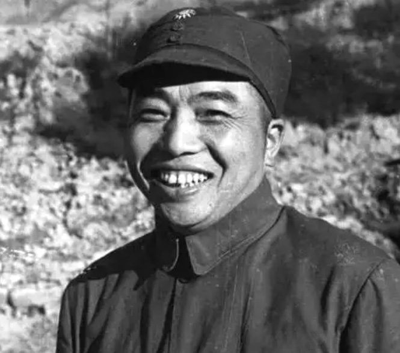
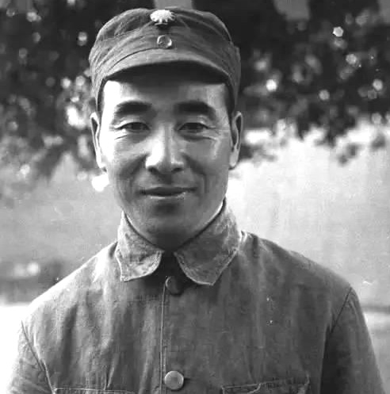
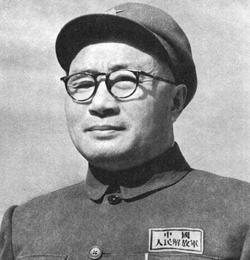
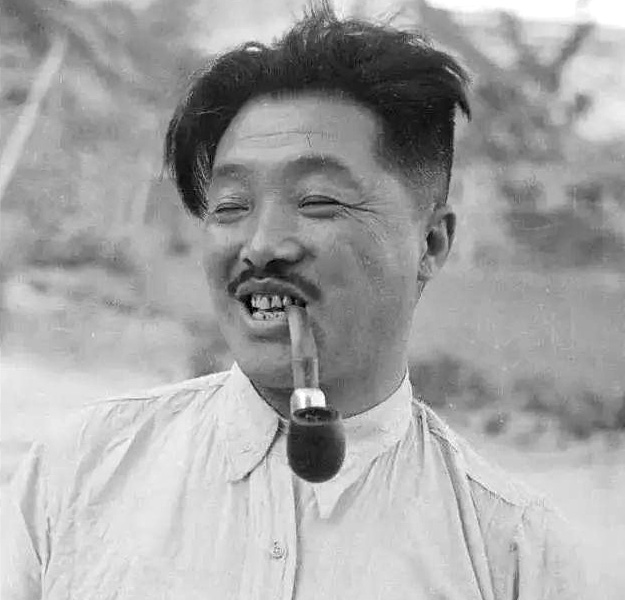
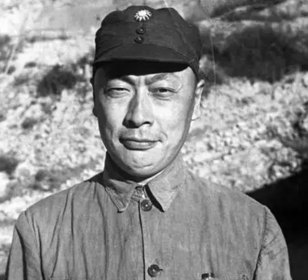
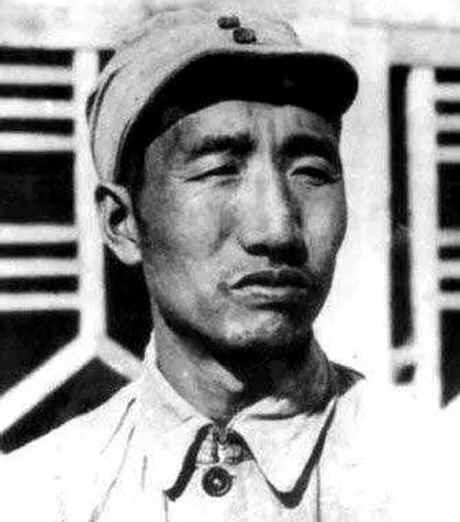
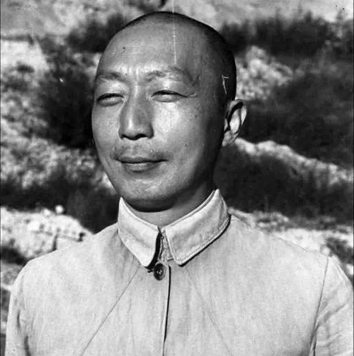
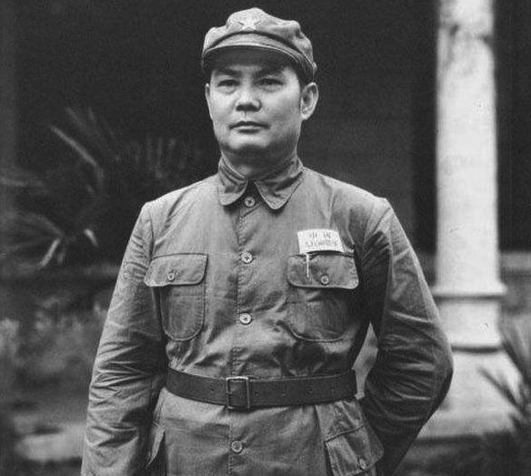

蒋介石如何评价我军的十大元帅
众所周知，十大元帅都是建立新中国的开国元勋，与毛主席都有着深厚的友谊，亦师亦友。
其实，蒋介石跟十大元帅也都有过交往，甚至共事过，那么，蒋介石对十大元帅都有什么评价呢？

朱老总很早就参加过同盟会，还参加过辛亥革命、护国战争、护法战争，在民国早期享有很高的威望，蒋介石也对他早有耳闻，曾经说：“朱德用兵精妙，为人诚笃，可惜不为我所用。”
不过，后来两人长期处于敌对状态，一直没有见过面，直到1937年全面抗战爆发后，国共合作抗日，两人才第一次见面。
朱老总比蒋介石大一岁，蒋介石就称他为“玉阶兄”，还说：“你的讲武堂同学朱培德曾经说，此生不能和玉阶一起共事，甚为遗憾。这也是我的遗憾。”
1955年，朱老总被授予元帅军衔，高居第一，蒋介石听说后，说：“只有朱德能称得上帅，其他的都是将。”

全面抗战爆发后，朱老总去见蒋介石的时候，彭老总也一起同行，也见到了蒋介石。
蒋介石对彭老总也是久闻大名，为了表示亲近，还问起来彭老总家里人的情况，说要是老家有什么困难，会让湖南省主席张治中多加照顾。
结果，彭老总没给他面子，说：“承蒙湖南何键主席的照顾，我的家人都快被你们杀光了，只剩下两个弟弟，在蒋委员长的照顾下，也是流落街头，生死不明！”
蒋介石听后，非常尴尬，只能赔笑。
后来，蒋介石还送给彭老总五万元的支票，说这是给他个人的，但彭老总没要，说委员长要是真心抗日，就给八路军和新四军发足军饷吧。

林彪与蒋介石的交往就更多了，毕竟一个是黄埔军校的学生，一个是校长。
早在黄埔军校学习期间，林彪就因为会画地图，受到了蒋介石的青睐，准备提拔他，但是因为林彪性格内向，不知道拍马屁，让蒋介石对他失去了兴趣。
后来，林彪打出了名堂，蒋介石又开始重新拉拢他，林彪1942年从苏联回国后，蒋介石就特地让胡宗南和戴笠去接林彪。
据资料记载，戴笠当时跟林彪畅谈了一个晚上，回去后非常兴奋，躲在屋里整理谈话内容，连胡宗南都不给看。
但是，戴笠不知道出于什么心理，并没有把他跟林彪的谈话内容告知蒋介石，蒋介石以为林彪“冥顽不化”，就放弃了。
到了解放战争时期，林彪指挥东北野战军打得国民党军没有招架之力，蒋介石非常痛心，在一次军事会议上拍着桌子说：“你们不要不服，林彪是黄埔军校最优秀的将军，你们中间哪个打得过林彪？可惜他去了那边，这是我作为校长的严重失职！我如果对林彪多加关心，给予重用，他就会成为我的爱将，可惜啊！”

刘伯承毕业于苏联伏龙芝军校，曾担任红军大学校长，军事理论水平非常高，蒋介石曾经说：“论战术之奇，刘伯承数中国军界一绝。”
解放战争时期，刘邓大军千里挺进大别山，在蒋介石的心窝里插了一刀，让蒋介石心痛不已。
美国驻华大使司徒雷登也对蒋介石很失望，说：“美国每月送给你们3000万军费，你们就这样被刘伯承打到心脏里来了！”
蒋介石又气又急，咬着牙说：“请大使放心，我亲自会会刘伯承，一定要把他打回去！”
后来的事大家都知道了，蒋介石不但没有把刘伯承打回去，反而被赶出了大陆。
后来，蒋介石不无惋惜地说：“我手下那么多黄埔将领，没有几个人能比得过刘伯承。”

贺老总跟蒋介石有着血海深仇，家族中先后有78个人死于蒋介石的枪下，因此，贺老总对蒋介石恨不得碎尸万段！
但是，当西安事变爆发时，很多人呼吁杀掉蒋介石，但贺老总出于抗战大局考虑，却主张不杀蒋介石。
全面抗战爆发后，贺老总见到了蒋介石，蒋介石问起来贺老总家里的情况，贺老总冷冷地说：“托蒋委员长的福，全家79口人，只剩下我贺龙一个了！没办法，要活命，只好扛起枪跟蒋委员长打了！”
从此，蒋介石再也没敢见贺老总。

在解放战争时期，蒋介石曾经说过：“现在关内的匪军约可分为五部，即贺龙部，聂荣臻部，陈赓部，刘伯承部，陈毅部。此五部中，就我的观察，以陈毅一部最为顽强，训练最精，诡计最多，肃清最为困难。”
不得不说，蒋介石虽然没什么见解，但这句话还是没问题的，陈毅率领的华东野战军，先灭掉了老蒋的头号主力整编74师，然后又在淮海战役中，与中原野战军一起灭掉了蒋介石80万大军，让老蒋欲哭无泪。
直到新中国成立后，蒋介石还数次派特务暗杀陈老总，但是在我军保卫部门的威慑下，老蒋派来的特务全部落网。
罗荣桓一开始就跟着毛主席参加革命，所以跟蒋介石基本上没有什么交集，就不说了。
第八位是徐向前。

徐向前是蒋介石的黄埔学生，而且跟林彪一样，也曾经因为性格内向，说话不中听，让蒋介石很“嫌弃”。
后来，徐向前率领红军打出一片天地，蒋介石也有点后悔，就派人去徐向前的老家山西五台县，拉拢徐向前的父亲。
徐向前的父亲早就知道蒋介石是什么人，对来人不冷不热，还说儿子自从去了黄埔军校，再也没回来，不知道是不是被校长关起来了。
蒋介石得知后，说了句“不识抬举”，再也没找过徐向前。

聂荣臻曾担任黄埔军校政治部秘书兼教官，算是蒋介石的同事。
不过，两人在黄埔军校时很不对付，蒋介石有一次坐着轿子去学校，被聂荣臻看到了，不知道里面是蒋介石，就过去拦住，说这里是黄埔军校，不是封建衙门，怎么能坐轿子进去？
蒋介石虽然很生气，但也知道自己做得不妥，就没有当面发火，但是在心里也给聂荣臻打了个差评。
后来，聂荣臻在黄埔军校里积极发展共产党员，更让蒋介石非常愤怒，说：“政治部那些人都是从苏联回来的，尤其是那个聂荣臻，尤其可恨，要提防此人！”
蒋介石败退台湾后，时刻想着反攻大陆，直到大陆研制出了原子弹，蒋介石才彻底放弃了这个不切实际的迷梦。而领导研制原子弹的，就是聂荣臻元帅。
蒋介石肯定想不到，当年那个给了自己一个下马威的青年教官，现在又给了自己最后一击！

叶剑英当年也是黄埔教官，担任过教授部副主任，与聂荣臻不同的是，蒋介石对叶剑英非常欣赏，也多次进行过拉拢。
但是，后来蒋介石发动四一二反革命政变后，叶剑英就毅然跟蒋介石分道扬镳，发表通电，公开反蒋。
不过，蒋介石对叶剑英仍然心存幻想，曾经对部下说：“有两个人你们一定不能杀，一个是周恩来，另一个是叶剑英。”
全面抗战爆发后，叶剑英被派到重庆工作，再次遇到了蒋介石。
在一次军事会议上，蒋介石指责八路军游而不击，叶剑英拍案而起，用真实准确的证据，驳斥了蒋介石的荒唐言论，还说有些国民党部队不但不抗日，反而经常跟八路军搞摩擦，不知道是不是蒋介石的指使。
蒋介石听得冷汗直冒，没等会议结束就匆匆离开了。
（参考资料：《十大元帅轶事》《蒋介石的人际网络》《抗战时期的蒋介石》）
——了解更多的开国将帅故事，可以看看历史客栈的专栏，共100篇开国将帅列传。